Life In Death

Eu venho usando essa imagem como uma logo para mim, eu gosto da idéia de que vida floresce da morte, o que na verdade é um fato, carcáças de baleias no fundo do mar criam um ecossitema que sustenta a vida de muitos outros animais, e eu acho que as pessoas tem um medo irracional da morte.
Under The Sun
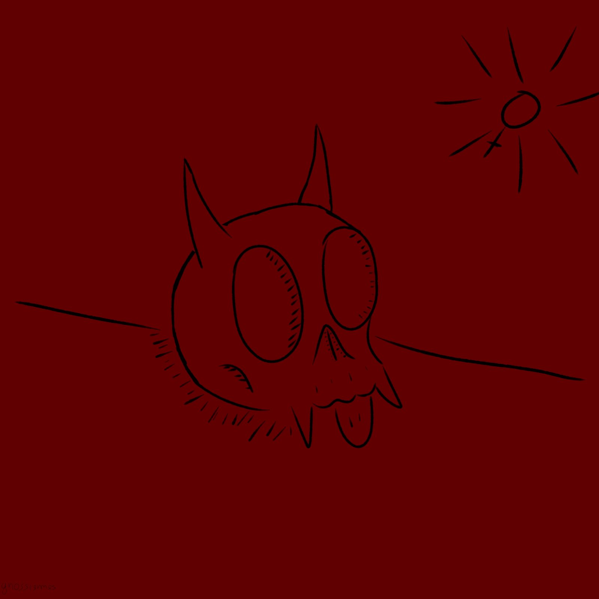My Cat
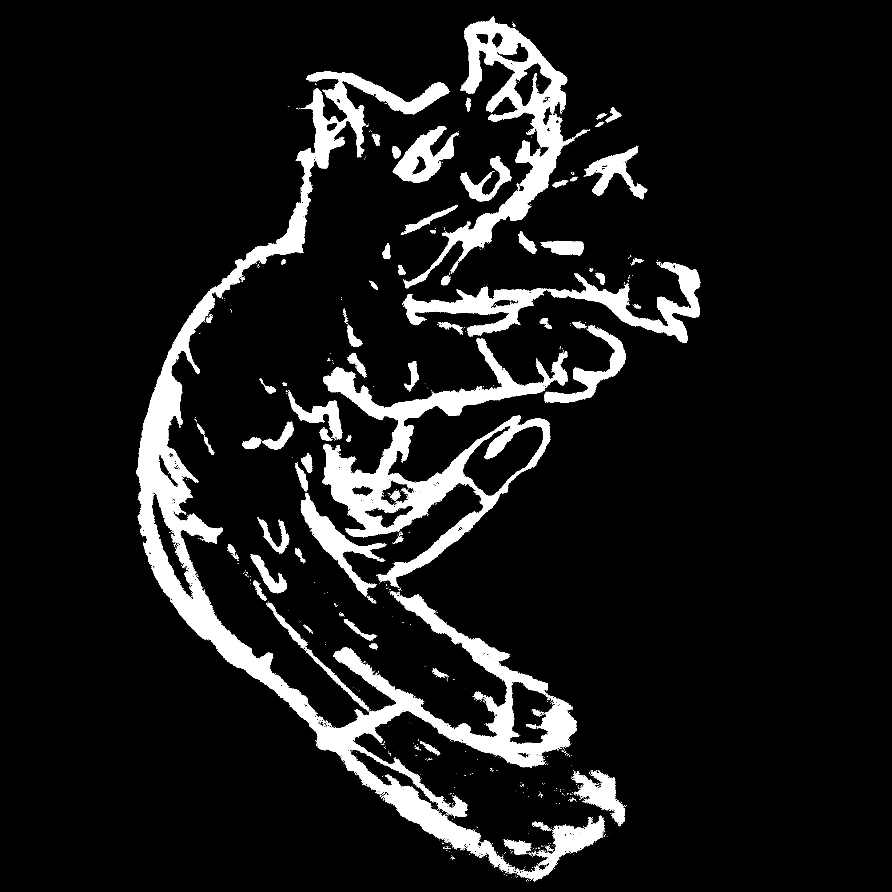Mourning Star
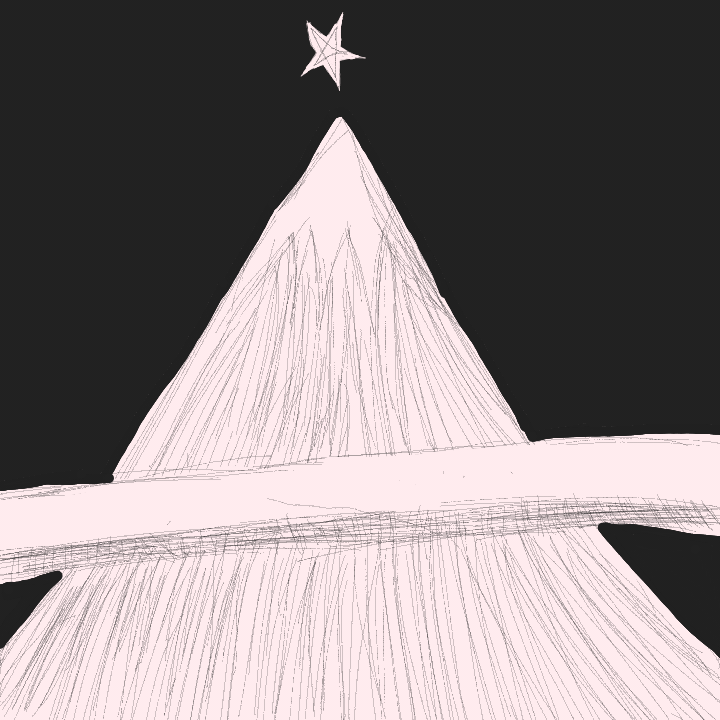Proxima Centauri
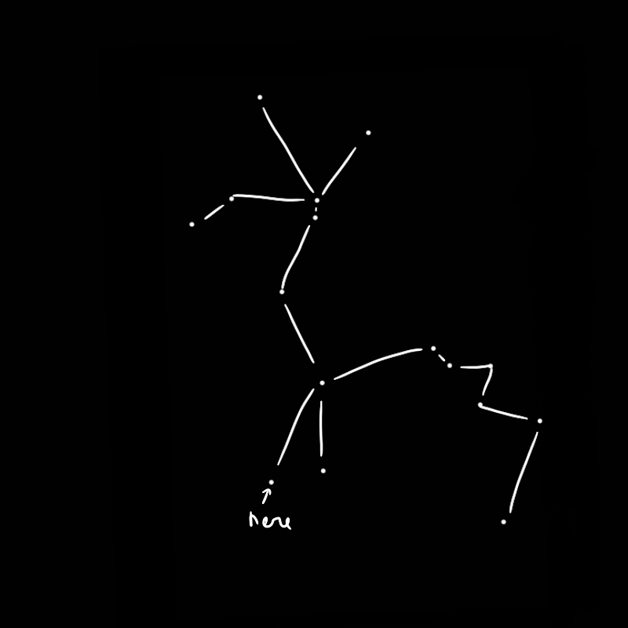Self Portrait
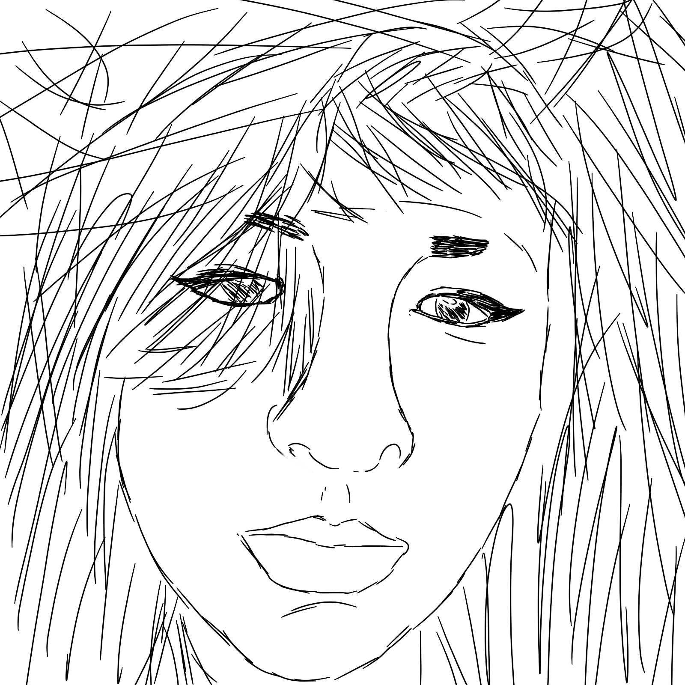Not My Bedroom
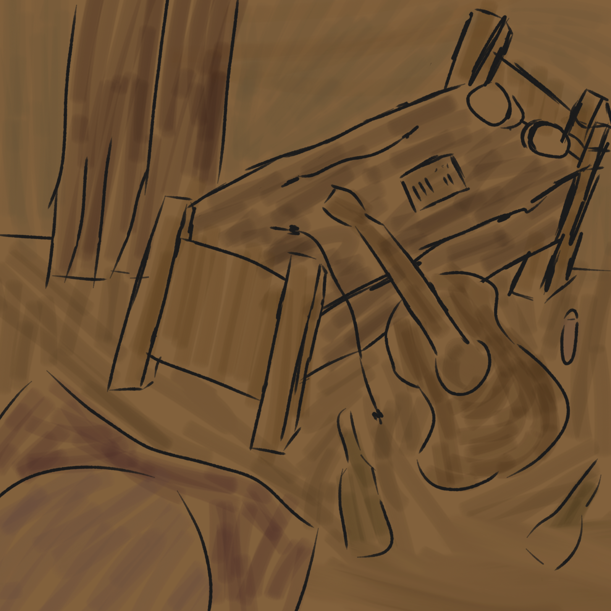Space Planet
Da minha era monocromática em 2023. Essa imagem tem uma resolução enorme para pixel art, muito maior do que qualquer coisa que eu tenha feito antes. Então, óbviamente eu não terminei. Eu não consegui fazer o planeta maior ficar com um formato certo e já tinha gastado muito tempo tentando.
Golden Mole Meets Worm
Type Scenario
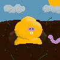
Skull
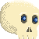Bous
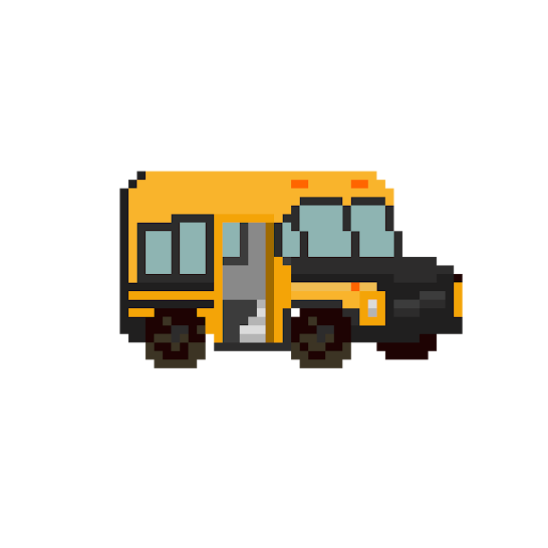David Blowie
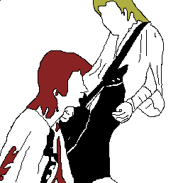Catangel
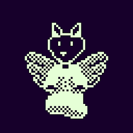e eu amei o dithering que eu fiz, boa pixel art.
Self Portrait As A Young Fag
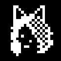em 2023 eu estava um pouco obcecada com
pixel-art monocromática
Essas são imagens em um estilo que eu criei, ou achei que tinha criado, porque eu descobri mais tarde que Andy Warhol tinha feito algo parecido nos anos 80, exemplo.
Spectrogirl
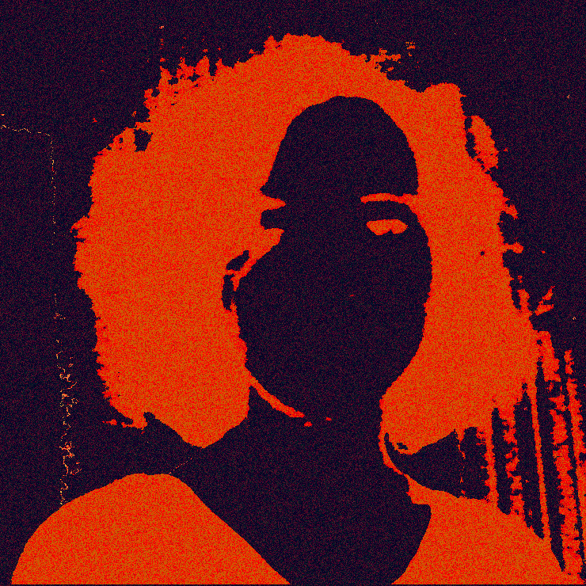Something
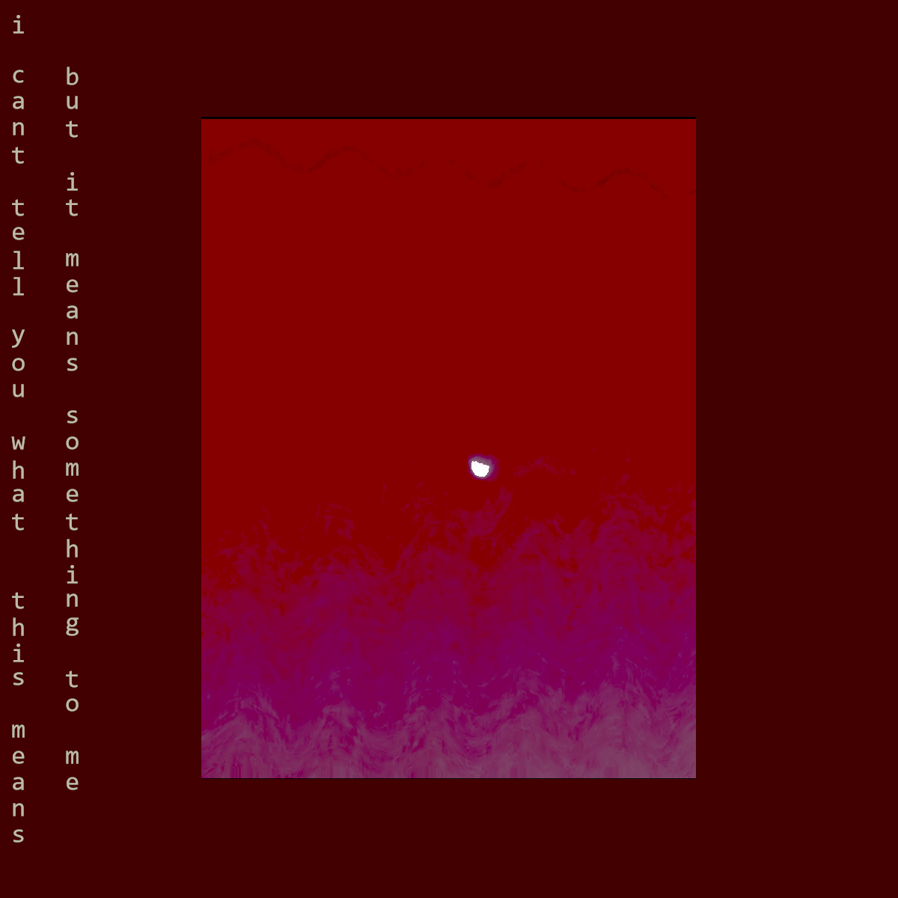test1
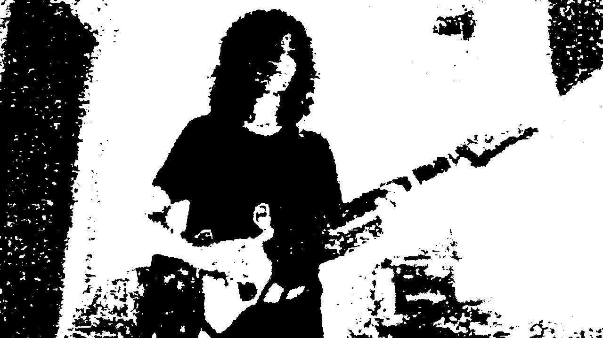happylittleaccident
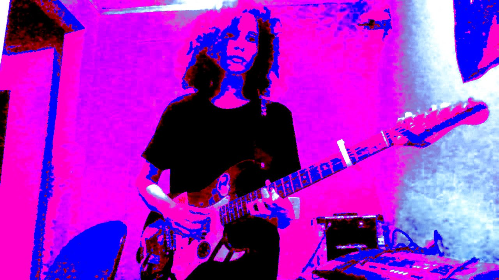too punk for y'all
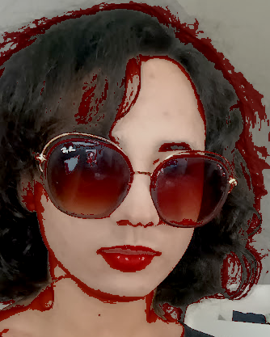I hit you as i fall
My Bedroom

My Other Cat

i'm not happy
É um vídeo que eu fiz para a minha música com o mesmo nome, eu usei a minha televisão convertida em osciloscópio, ela estava conectada ao meu amplificador enquanto eu tocava. Eu gravei eu tocando com a webcam do meu computador, eu coloquei umas luzes piscantes na minha mesa. Depois eu editei tudo junto, troquei as cores, eu acho que a edição foi feita no capcut, eu copiei e colei as mesmas coisas com transparências diferentes e em posições diferentes. Eu tava tentando fazer parecer um vídeo do Severed Heads.
'round midnight
Esse é um vídeo meu tocando o meu arranjo de 'round midnight, um standard de jazz. Eu acabei não publicando porque eu ainda não tinha terminado o arranjo.